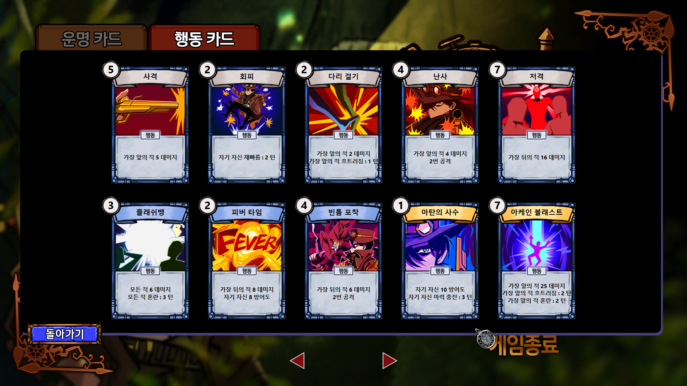
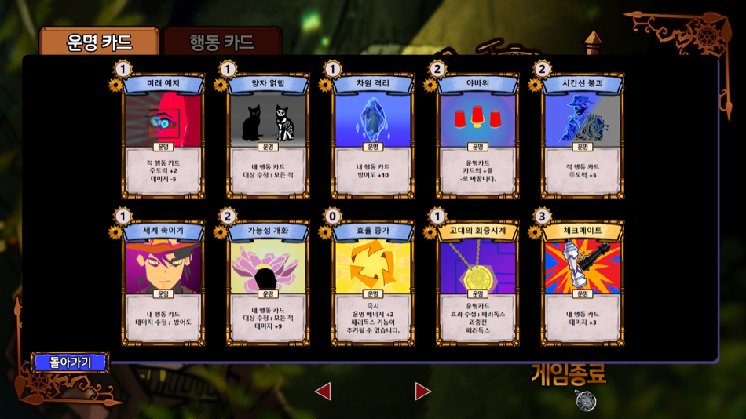

Fate
Weaver
두 번째 자체 엔진 프로젝트로, 엔진 구조와 카드 전투 로직을 맡았습니다. 이후 작업의 기준이 된 컴포넌트 구조를 이 엔진에서 확립했고, 실행 주기를 인터페이스로 나눠 컴포넌트가 필요한 주기에만 참여하도록 했습니다. 게임 쪽에서는 전투 씬을 하나의 상태 머신으로 구성하고, 카드 효과를 컴포넌트처럼 탈부착할 수 있게 해 조합만으로 새 카드를 만들 수 있도록 했습니다.
엔진 설계
아키텍처는 Unity를 참고해 오브젝트는 컴포넌트를 담는 컨테이너로 두고, 실행 주기를 인터페이스로 분리해 컴포넌트가 필요한 주기에만 참여하도록 했습니다. 엔진(Core)은 lib, 게임(App)은 exe로 분리해 게임 코드가 엔진 내부를 수정하지 않고도 동작하도록 했습니다.
엔진은 루프만 실행하고, 실제 로직은 씬에 속한 오브젝트들이 각자 수행합니다
기능은 모두 컴포넌트로 구현합니다. 오브젝트는 이를 담기만 하고, 무엇을 붙였는지가 성격을 결정합니다
필요한 주기만 상속합니다. 상속한 인터페이스가 곧 해당 컴포넌트가 언제 실행되는지에 대한 선언입니다
기능
카드 실행 순서의 정렬 기준. 낮을수록 먼저
양측 행동 카드가 주도력 순으로 놓이는 화면 상단
턴이 끝나면 순서대로 발동되는 카드
행동 카드의 효과·대상·순서를 바꾸는 플레이어의 손패
능력을 탈부착하는 카드 설계
카드를 오브젝트로 두고, 피해량·상태이상·대상 같은 능력을 컴포넌트로 붙여 한 장을 완성
운명 카드가 수치·대상·주도력·횟수까지 변경하므로, 카드 한 장의 능력이 런타임에 계속 달라짐
카드마다 클래스를 만들지 않고 부품 조합만으로 새 카드를 정의. 짧은 기간에도 카드 종류를 계속 늘릴 수 있었음


// CardFactory.cpp — '다리 걸기' 조립 예시 case DefaultPlayCard::PlayerCard::다리걸기: { PlayCard* card = new PlayCard(L"다리 걸기"); // 피해 2, 가장 가까운 적 card->AddComponent<AttributeParts>() ->InitializeAttributeParts( Attribute::DAMAGE, 2, Destination::NEAREST_ENEMY); // 상태이상 '흐트러짐' 1회 card->AddComponent<StateParts>() ->InitializeStateParts( State::DISRUPTION, 1, Destination::NEAREST_ENEMY); return card; }
Card는 GameObject를 상속합니다. 엔진의 컴포넌트 구조를 게임 규칙에 그대로 재사용한 것으로, 운명 카드는 대상 카드에 붙어 있는 AttributeParts를 찾아 값과 대상만 변경합니다. 카드 문구 역시 각 부품의 ExtractString()을 이어 붙여 생성하므로, 수치가 바뀌면 텍스트도 함께 갱신됩니다.
CardPartsComponent — 수치를 가진 부품의 공통 인터페이스. 원본 값 저장·복원 담당AttributeParts — 주도력 / 피해 / 방어도 / 공격 횟수 등 수치 + 대상StateParts — 재빠름·혼란·흐트러짐 등 상태이상 부여CardFuncComponent — 드로우·교체처럼 수치로 표현되지 않는 동작운명 카드가 값을 변경한 뒤 턴이 끝나면 원래 값으로 복구되어야 하는데, 여러 카드의 효과가 겹치면 원본 값을 추적할 수 없었습니다. 부품마다 SetOriginValue / ResetToOriginValue 구현을 강제해, 복구 책임을 부품 자신에게 두는 방식으로 정리했습니다.
하나의 상태 머신으로 동작하는 전투 씬
전투의 모든 국면을 BattleProgress 8단계로 세분화하고, 씬의 Update가 현재 단계의 함수만 호출
턴제에서는 현재 진행 상황 자체가 규칙이 됨. 조건문으로 흩어 두면 연출과 입력 잠금이 서로 얽힘
단계를 하나 추가하는 것만으로 새 연출과 규칙을 도입. 문제의 원인도 단계 단위로 좁혀짐

enum class BattleProgress
{
DRAW_FATECARD, DRAW_PLAYCARD,
SHOW_PLAYCARD, USE_FATECARD,
SELECT_TARGET_CARD, DRAW_FUTURE,
APPLY_PLAYCARD, ATTACK_CHRACTER,
};
// 씬의 Update 는 현재 상태에 해당하는 함수 하나만 호출한다
switch (m_Progress) { /* DrawFateCards() · UseFateCards() · … */ }
각 함수는 처리가 끝나면 다음 상태를 직접 지정합니다. 연출 대기 또한 UpdateDelayTime()으로 상태 내부에서 처리해, 애니메이션이 끝나기 전에 다음 카드가 발동되는 문제를 상태 경계에서 차단했습니다.
FATECARD
PLAYCARD
PLAYCARD
FATECARD
TARGET
FUTURE
PLAYCARD
CHRACTER
각 단계는 완료 조건을 만족해야 다음으로 넘어갑니다. 단계를 이렇게 나눠 둔 덕분에 뒤늦게 추가된 규칙도 기존 코드를 수정하지 않고 들어올 수 있었습니다. 주도력이 0 이하로 내려가면 즉시 발동되는 ‘찰나’, 10을 넘으면 다음 턴으로 넘어가는 ‘이월’이 그 예입니다.
상태 개수가 늘어나면서 BattleScene 한 파일이 계속 비대해졌습니다. 상태를 enum과 switch가 아니라 클래스 단위로 분리했다면 각 상태가 진입과 종료를 스스로 책임질 수 있었을 것입니다.
회고
이후 작업의 기준이 된 컴포넌트 구조를 이 엔진에서 확립했고, 실행 주기를 인터페이스로 선언하게 해 컴포넌트가 필요한 주기에만 참여하도록 했습니다.
같은 구조를 게임 규칙에도 적용해 카드 한 장이 능력의 조합으로 정의됩니다. 짧은 기간에 카드가 계속 늘어나는 상황을 감당할 수 있었던 이유입니다.
이벤트 ID를 문자열로 사용해 오타를 컴파일 단계에서 검출할 수 없었고, 파라미터 타입도 받는 쪽이 미리 알고 있어야 했습니다.
전투 상태를 enum과 switch로 둔 탓에 BattleScene이 비대해졌으며, 무엇보다 에디터가 없어 수치 하나를 바꾸는 데도 재컴파일이 필요했습니다.
데이터와 코드의 분리, 즉 에디터를 다음 엔진의 최우선 과제로 삼아 TicToc Guardians에서 구현했습니다.
이벤트 식별과 상태 처리는 한 세대 뒤인 Midnight Cleanup에서 정리했습니다. 이벤트는 구조체로 정의해 타입 자체를 식별자로 삼았고, 상태는 전이 조건을 가진 객체로 분리해 에디터에서 편집하도록 했습니다.